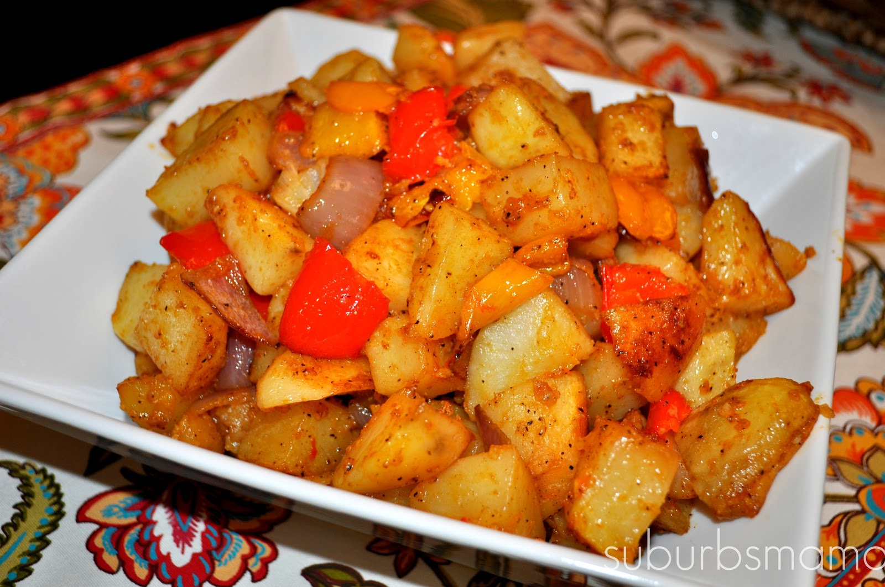

Roasted Potatoes with Bell peppers and Onions
This is an easy and delicious side I like to make. It is not the quickest side dish to make, but it one of the yummiest
I absolutely love roasted bell peppers and onion with my potatoes!
Ingredients
- 2 bell peppers washed, seeded and cubed
- 1 red onion Peeled and cubed
- 8 potatoes
- 1/4 cup of Olive oil
- 3 cloves of garlic (minced)
- 1/2 tsp. paprika
- Salt and pepper to taste
Instructions
- Peel, wash and cube your potatoes.
- In a large bowl, combine your potatoes, bell peppers, and red onion, olive oil, garlic, paprika, salt & pepper.
- Toss until well combined.
- Preheat oven to 350
- Grease a large baking sheet. ( I always use foil for easy cleanup)
- Spread the potatoes evenly on the prepared sheet.
- Bake at 350 for 45 minutes.
- Remove the potatoes from oven and using a spatula, give the potatoes a good mix.
- Turn up the heat to 400 and put in the oven for 15 more minutes.
- Pierce the potatoes with a fork to make sure they are cooked through. If not, cook more.
- Serve and enjoy
Return to top
Return to main page